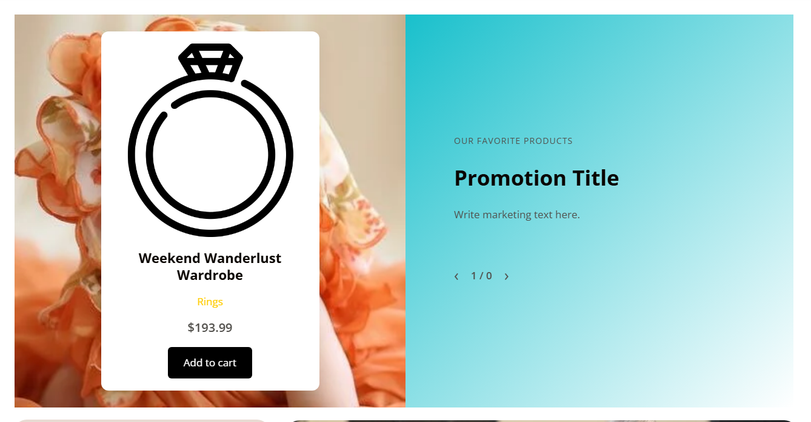

公开演示截图 · 2026-10-1401 / Commerce storytelling
Advanced Product Showcase
用同步的商品主视觉与推广文案构成双栏展示，让单品选择与品牌叙事发生在同一屏。
- 配置方式
- 在区块属性中维护 slides、商品、背景、富文本、按钮和响应式数量；编辑器通过 ProductPicker 选择商品。
- 技术实现
- PHP 动态渲染并过滤非公开或不可见商品；前台与编辑器脚本分离，共用本地 Swiper 11.0.0 和按钮组件。